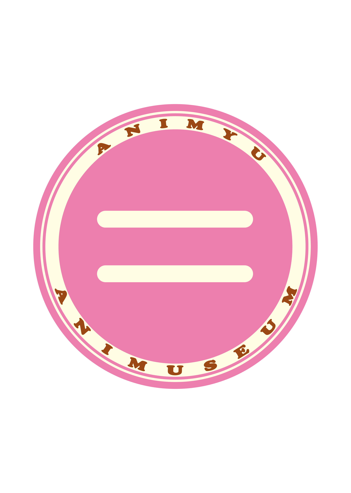
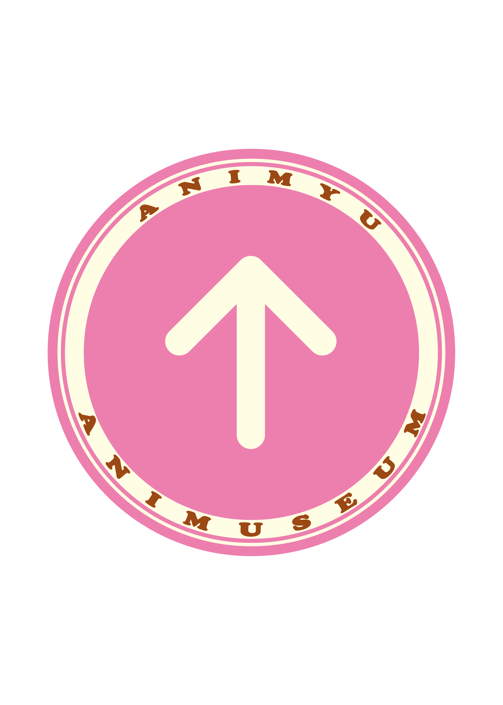

目次
あにみゅ!関連イベント
演者紹介
あにみゅ子ちゃんとは？
よくある質問
ARCHIVE
ANIMUSEUM!
フライヤー
あにみゅ!関連イベント
演者紹介
organaizer:つぶk
新入生のみなさんに、"はじまりたい！新しいことがしたい！"と思ってもらえるようなDJをします。
fav:イキヅライブ！
regular:ちくわ
日常・恋愛系中心でアニメ好きです。
fav:からかい上手の高木さん、ゆるキャン、月がきれい、田村ゆかりさん
regular:燃ゆ
あの時のスタァライトはまだ眩しいです。
fav:ボカロ、スタァライト、バンドリ、エトセトラ
regular:曽流戸・楽男
昔は「人を殺す魔法」と呼ばれました。
fav:葬送のフリーレン
regular:文kou/あやこう
最近OOガンダムを見て泣いた。
fav:ボカロ、ホロライブ
regular:鶏そぼろ
2次ドル大好き人間 最近はバンドリの声優にもハマっている模様
fav:ラブライブ!、バンドリ、アイマス、前島亜美さん
regular:そら
映像出し出しマン
fav:妹モノのエロゲー、にーちゃ
regular:るは師匠
ﾆｯﾎﾟｰﾝのｺﾞﾊｰﾝが食べたくて
fav:アニメ、ウマ娘、日本食
regular:yuyu
2次元の女の子が好きです
fav:Vtuber（ホロライブ、ぶいすぽ）、ボカロ、東方、ウマ娘、ブルアカ、ガンダム
regular:ハルギウス
project No.9様
fav:ゆるゆり
regular:アキ
六根清浄
fav:ウマ娘
ACCESS
MAP
あにみゅ子ちゃんとは？
★あにみゅ子ちゃん★
当サークルイメージキャラクター
イラスト:斉藤りょーパー様
よくある質問
Q. イベントの開催日時はいつですか？
A. 2026年6月21日（土）13:00から開始となります。
Q. 途中入退室可能ですか？
A. はい。再入場時に、入場の際にお渡しするチケットの半券をお見せください。
ARCHIVE
過去ANIMUSEUM!の記録
vol.41